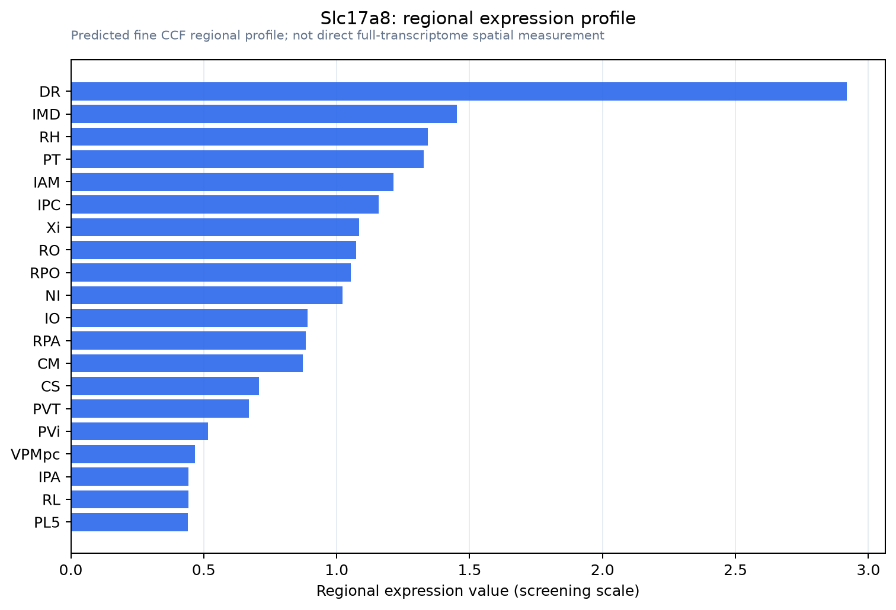

Slc17a8
Vesicular glutamate transporter 3 (VGluT3) (Solute carrier family 17 member 8)
Spatial tier: RESTRICTED · Class: ION_CHANNEL · Top region: DR (Dorsal nucleus raphe) · Positive regions: 14/554
46.2Discovery Score
41.4Targetability Score
CEvidence grade C
What this means: Slc17a8: fine CCF profile is restricted toward DR (top regions: DR, IMD, RH, PT, IAM; 14 positive regions); direct spatial validation is still required.
Direct spatial evidence
MERFISH REGION LOCATOR

Regional expression figure

Predicted WMB × fine-CCF profile; not direct full-transcriptome spatial measurement.
Spatial profile
Evidence and specificity
- Evidence status
- PREDICTED_FINE
- Direct sources
- None; predicted localization only
- Exclusive threshold
- 12 positive regions out of 554
- Spatial specificity
- 0.323
- Top-region fraction
- 0.089
- Filter status
- PASS
Interpretation limits
- Cell-type-to-region projection is imputed expression, not direct spatial measurement.
- Adult reference atlases do not establish stability across age, sex, strain, state, or disease.
- Transcript abundance does not guarantee protein abundance or genetic-tool performance.